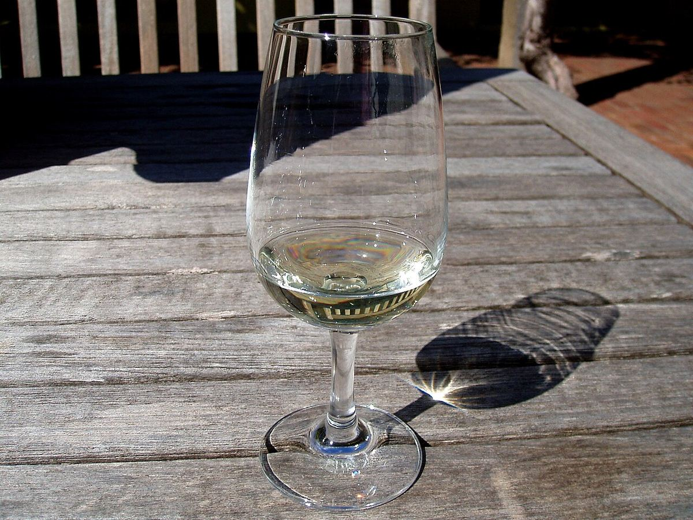

BLANC
Cépage blanc aromatique du Rhône septentrional, celui du condrieu, aux arômes d’abricot et de fleurs et à la texture onctueuse ; il est aussi co-fermenté avec la syrah à Côte-Rôtie.

Le viognier est originaire du nord de la vallée du Rhône, sur les coteaux granitiques situés au sud de Vienne. Son origine exacte reste inconnue, même si les études génétiques le rattachent à d’autres cépages anciens de la région. Au milieu du XXe siècle, il était au bord de la disparition : il n’en restait que quelques hectares à Condrieu et à Château-Grillet. À partir des années 1980, sa surface a rapidement augmenté, d’abord dans le sud de la France puis dans le Nouveau Monde.
C’est une vigne délicate, aux rendements faibles et irréguliers, sensible à l’oïdium. Elle a besoin d’un climat suffisamment chaud pour mûrir pleinement, car ses arômes n’apparaissent qu’à pleine maturité ; mais vendangé trop tard, il perd vite son acidité et gagne en alcool. Le choix de la date de vendange est donc décisif. Dans le Rhône septentrional, il est cultivé sur des terrasses très pentues de granite décomposé, l’arène.
Il donne des blancs dorés, amples, à la texture onctueuse et à l’acidité modérée. Son nez est inimitable : abricot, pêche, fleur d’oranger, chèvrefeuille, violette et parfois des notes épicées. On le boit généralement dans ses premières années, lorsque le fruit est le plus expressif, même si les meilleurs condrieu gagnent en complexité avec un peu de garde. Il peut être vinifié en cuve ou en barrique et sert parfois à de petites quantités de vins doux.
Ses appellations de référence sont Condrieu et Château-Grillet. À Côte-Rôtie, on peut co-fermenter jusqu’à 20 % de viognier avec la syrah, ce qui stabilise la couleur et apporte du parfum. Il s’est répandu en Languedoc et dans le Rhône méridional, en vin de cépage ou en assemblage. En Australie, il s’est fait connaître seul ou dans la formule shiraz-viognier ; on le cultive aussi en Californie, en Afrique du Sud, au Chili, en Argentine et en Espagne.
Sa richesse aromatique convient aux cuisines aux épices douces, aux currys, aux fruits de mer en sauce, aux volailles aux abricots et aux fromages de chèvre. On le sert entre 10 et 13 °C.
